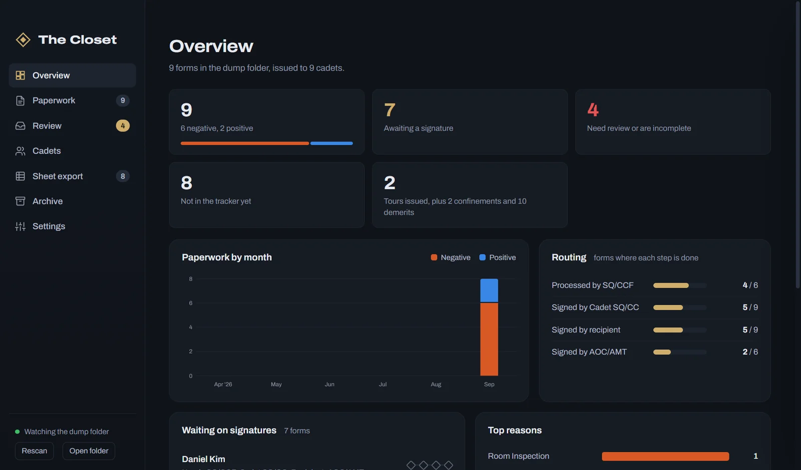
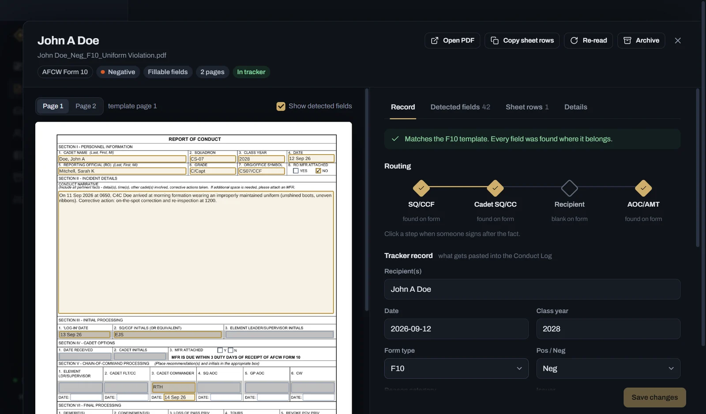
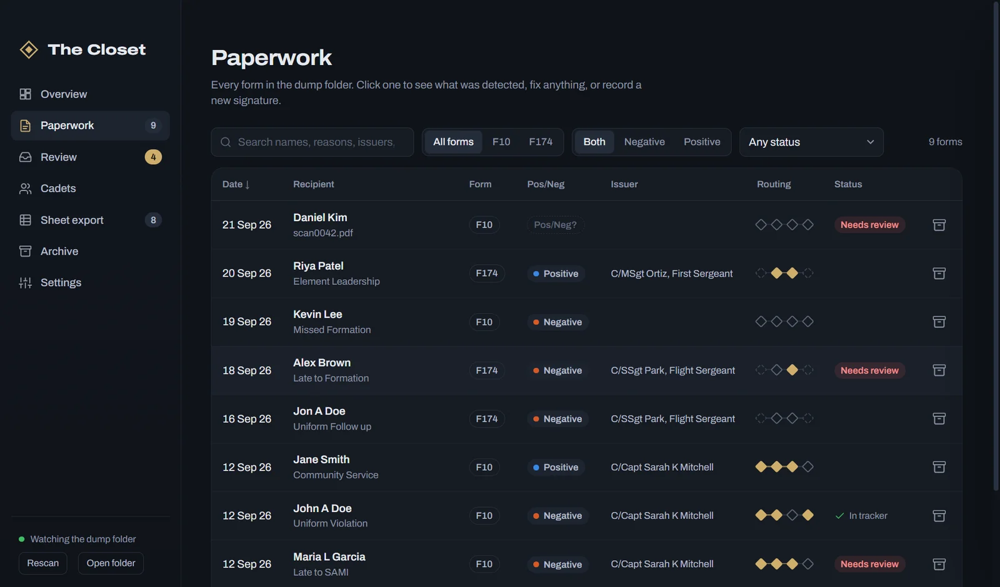
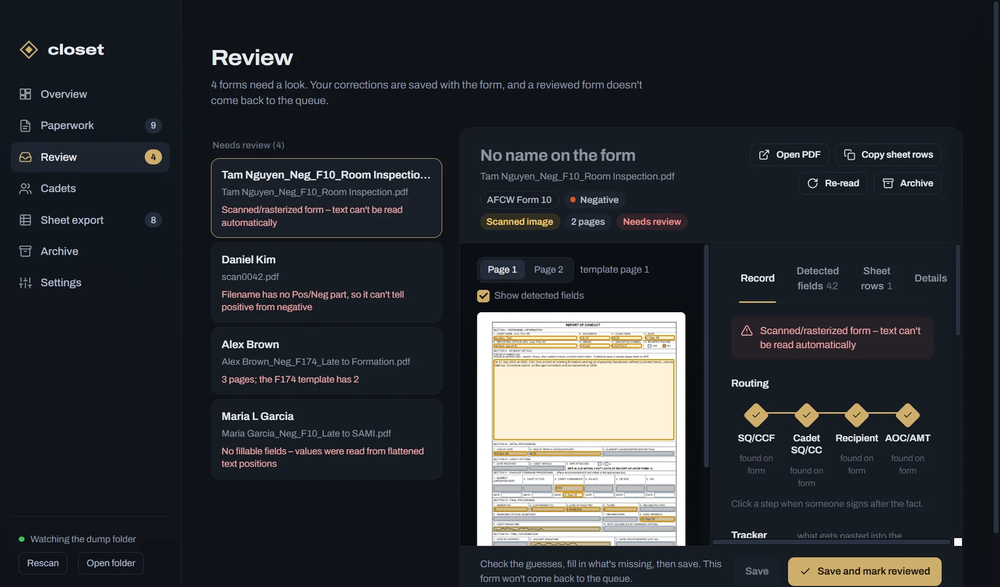
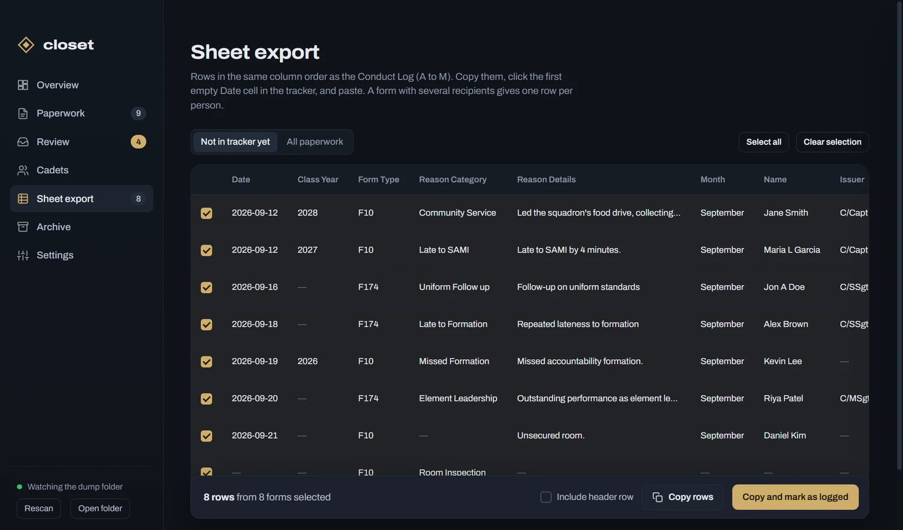

Every Form 10 and 174, read and routed.
The Closet is a desktop app for the first sergeant. Drop paperwork into a folder and it reads each AFCW Form 10 and AF Form 174, tracks who has signed, flags anything that needs a person, and gives you rows ready to paste into the discipline tracker.

Reads the forms you actually get.
Copies of these forms get recreated, re-exported, flattened and scanned, so field names can't be trusted. The Closet matches every box by where it sits and what kind of field it is, against the blank forms built into the app.
- Fillable forms: fields match by position, even when they've been renamed or shifted a few points.
- Flattened copies: values are read from the text inside each box, never the printed labels.
- Scans: pages are lined up against the blank form, and new ink shows which boxes and signatures are filled.
- Extra pages: an MFR stapled in front? The form pages are found anyway.

Knows who still has to sign.
Every form carries its routing: processed by the SQ/CCF, signed by the Cadet SQ/CC, by the recipient, by the AOC/AMT. The Closet reads each one off the form, and when someone signs later, one click records it.
- Wet ink, stamped, drawn, and digital signatures all count.
- Search and filter by cadet, form, reason, or what's still outstanding.
- A per-cadet view totals demerits, tours, and confinements.

Asks a person only when it has to.
A scan it can't read, a form with missing fields, a filename without Pos or Neg: those go to a review queue with the guesses already filled in. Fix what's wrong once and the form never comes back.
- Positive Form 10s wait on the incomplete list until CDNA and Passes are entered.
- Two names a letter apart? It asks whether they're the same cadet, then remembers the answer.
- Redundant paperwork can be archived: kept, but left out of every count.

Pastes straight into the tracker.
Sheet export lists rows in the Conduct Log's column order. Copy them, click the first empty cell, paste. A form with several recipients becomes one row per cadet, and whatever you've logged is marked, so nothing goes in twice.

Paperwork stays on your computer.
No accounts, no cloud, no uploads. PDFs stay in your dump folder and are never moved or changed. Everything The Closet learns, including your edits, lives in a metadata folder right next to it, so backing up is copying two folders.
Download The Closet
Version 2.0 for Windows, macOS, and Linux.
Windows
Windows 10 or 11. The installer adds Desktop and Start Menu shortcuts; the portable version runs without installing.
macOS
macOS 11 or later. Not notarized yet: the first time, right-click the app and choose Open.
Linux
64-bit Linux. The AppImage runs anywhere; the .deb installs on Debian and Ubuntu.
Building from source: npm install, then npm start to run or npm run dist to make an installer for your system. The blank templates come with the app; your paperwork goes in the dump folder you pick in Settings.